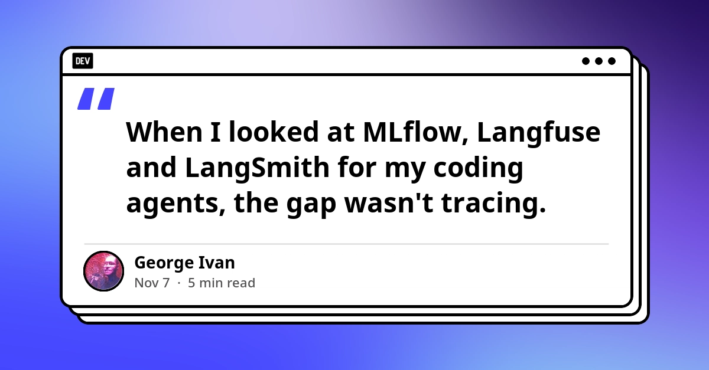
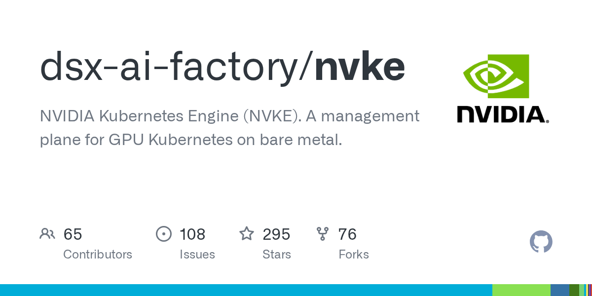
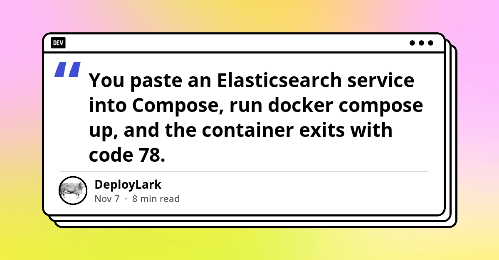
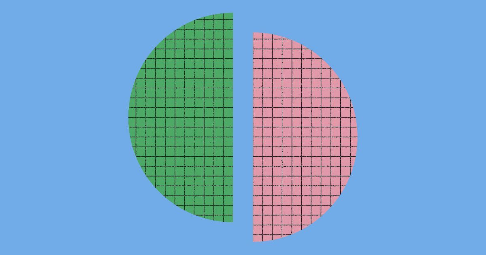
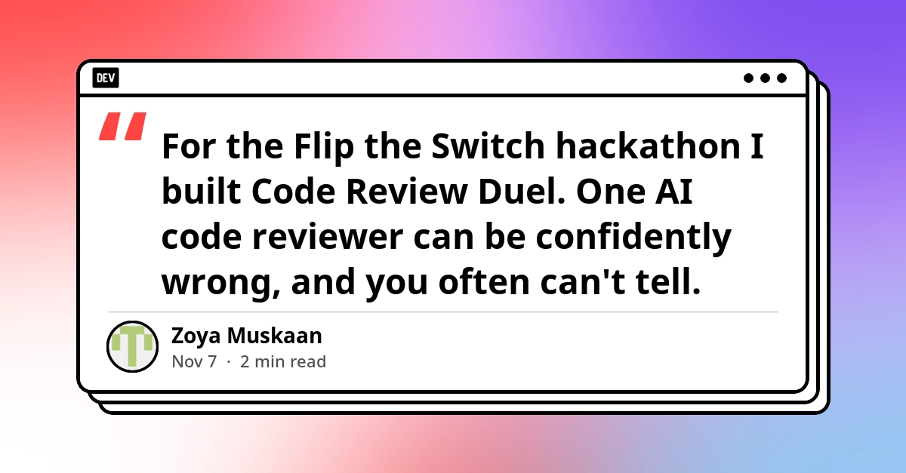
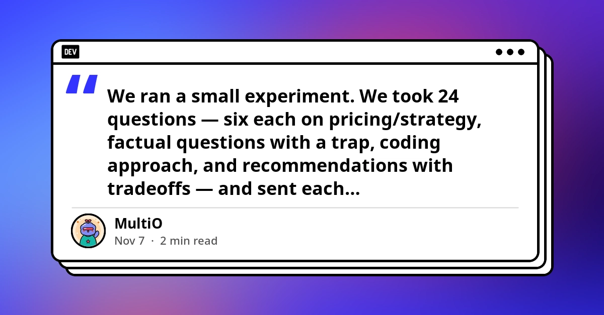
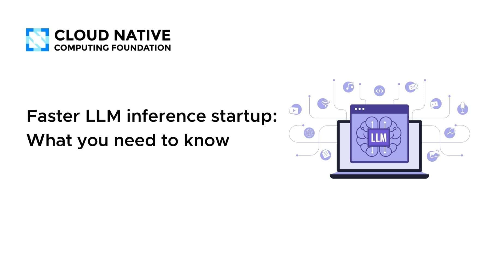
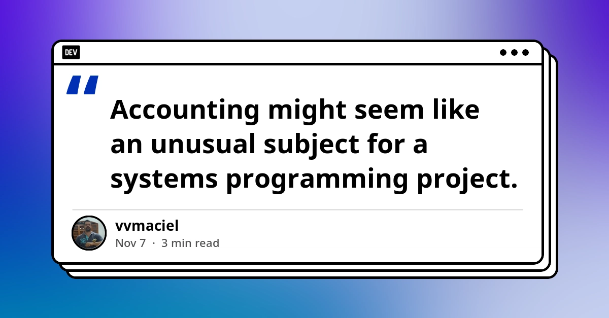
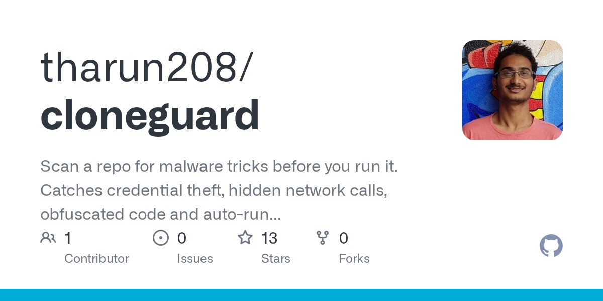
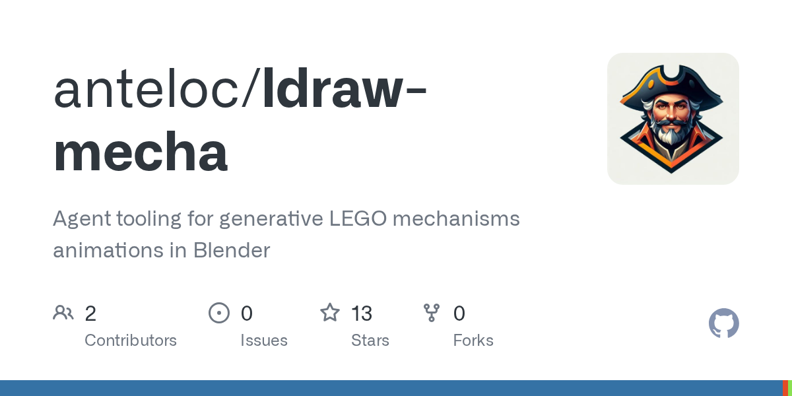

🔥 Top 3 (must read)
GitHub Blocks pull_request_target by Default (Ship It Weekly)
From December 2, GitHub will block the
pull_request_target trigger in public repos by default. Before that, there are short "brownouts" (test outages) on Monday November 9 and Monday November 16, from 11 AM to 1 PM ET. The same episode covers a WordPress update race condition that attackers are using now, and a hijacked DebugBear script that took about $2.7M from Polymarket users. Why it matters: If any of your public repos use this trigger in GitHub Actions, CI can break in two days. The DebugBear case is a good example of supply-chain risk to share with the team.R
Beyond code generation: A developer's guide to agentic engineering
GitHub says writing code got faster, but the work around it (planning, review, production issues) did not. The post shows how to use Copilot for planning, coding, reviewing changes and looking into production issues, and which parts still need human judgment. Why it matters: It helps an EM decide where agents fit in the team's delivery process, and where people must stay in charge.
Tracing for coding agents that redacts before it writes
The author says MLflow, Langfuse and LangSmith can trace LLM calls, but a coding session is different. It is a long tree of tool calls, file edits, retries and nested agents. When you store those transcripts, redaction (hiding secrets and private data) has to shape how you store them from the start. Why it matters: If your team runs Claude Code or Copilot agents at scale, this explains how to watch what the agents do without leaking secrets into your logs.

🛠 Tools & releases
Nvidia Kubernetes Engine (NVKE)
: a new open-source Kubernetes engine from Nvidia (HN discussion, 123 points).

Elasticsearch in Docker: Fix vm.max_map_count Too Low
: how to fix the 3 common Compose failures. These are exit code 78, the
localhost:9200 loopback trap, and 401 until you set ELASTIC_PASSWORD.
🤖 AI for developers
The Components of Agent Memory (Anthropic)
: Anthropic research on how memory in AI agents is built.

Code Review Duel
: two AI reviewers on two different free models review the same code and check each other. Then a human picks the better review. It tries to solve the problem of one reviewer that is "confidently wrong".

5 AI models, the same 24 questions
: GPT, Claude, Gemini, Grok and Llama agreed on 8 of 24 questions (33%). On 16 of 24 (67%), at least one model gave a different answer in substance, mostly on judgment calls such as coding approach and tradeoffs.

Faster LLM inference startup (CNCF)
: a new inference replica adds capacity only once it can serve requests. The post covers the slow steps before that: loading weights, setting up the GPU and compiling kernels. Useful if you autoscale LLM servers on Kubernetes.

👔 Engineering & teams
Why a Double-Entry Ledger Is an Interesting Systems Programming Problem
: data modeling, transactional storage and keeping invariants (rules that must always be true) in a small C + SQLite library. A good pattern for any payments or billing backend.

🎯 For me
Ship It Weekly
CI: check your GitHub Actions for
pull_request_target before the November 9 brownout ().R
GitHub's agentic engineering guide
AI adoption as an EM: and tracing for coding agents.
Nothing today on Node.js, React, Flutter or Playwright/Maestro.
💡 App ideas & indie builds
CloneGuard
(HN): scans a cloned repo for tricks that steal credentials before you run anything in it. Problem: a repo you clone (for example a "take-home test" or a sample project) can hide code that runs on install. Inspiration: a small security check that runs before the risky step. Many "check before you run" tools could follow this pattern.

Agentic Identity Broker
(HN): from Zalando, it gives AI agents OAuth delegation. The agent acts for a user with limited, delegated access, not with the user's full credentials. Problem: giving agents safe access to user accounts. Inspiration: "auth for agents" is a new and open area for apps.

ldraw-mecha
(HN): agents read Lego model sources, work out how the mechanisms move, then animate them. Problem: static building instructions do not show how gears and parts move. Inspiration: agents that turn static data into an interactive explanation.

🎓 Try this
Search your repos for
pull_request_target in .github/workflows/ (for example with grep -r pull_request_target .github/workflows). Move those jobs to pull_request, or plan the change before the brownout on Monday, November 9, 11 AM–1 PM ET. Details: Ship It Weekly.